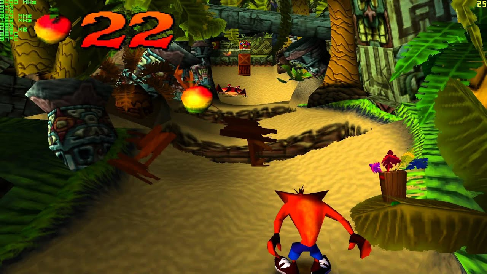

I used to play this game a lot as a child on PS1 and playing it again recently have brought back many memories.
Crash Bandicoot – a mascot that Sony needed to compete with other companies such as SEGA and Nintendo. Although Sony denied it many times that it is not their new mascot. Playing the game reminds one of many things similar to Nintendo’s Mario.
The story of the game starts with Dr. Cortex who uses a device to mutate the bandicoot. The experiment fails, and crash escapes the laboratory. Dr. Cortex then advices to prepare the female bandicoot. Crash lands on an island where it starts its journey. The sound of the game really catches you from the start. It gives you a feel that you are in some kind of a beach and sets the pace of the game. There are different sound effects for different actions such as collecting rewards and fruits, smashing the crates, getting an extra life and finishing the level.
The levels of the game are mostly set in beaches, forests and villages. There are different islands within the game as the game progresses crash moves on from one island to another with different settings. In each level there are crates with fruits which crash can collect as rewards. There are obstacles such as different animals, plants coming out of the land and wheel like rock structures moving from one side of the screen to another. Avoiding these obstacles is possible by using the jump mechanics of the game. Players can use both long and small jumps. There is also a possibility of jumping onto some obstacles and ledges. Graphics of the game looked a lot like a 3D game of that time. The colors are pleasing to the eye as everything in the game has a different color from animals to plants to crates and even the forests on the side of the camera has multiple colors.
All in all, Crash Bandicoot is a linear fast paced game which keeps the player in action at almost every second of a level. There are also bonus levels which can be reached if one completes casual levels with the highest points. Bonus levels have a side view which also uses the same jumping mechanism.